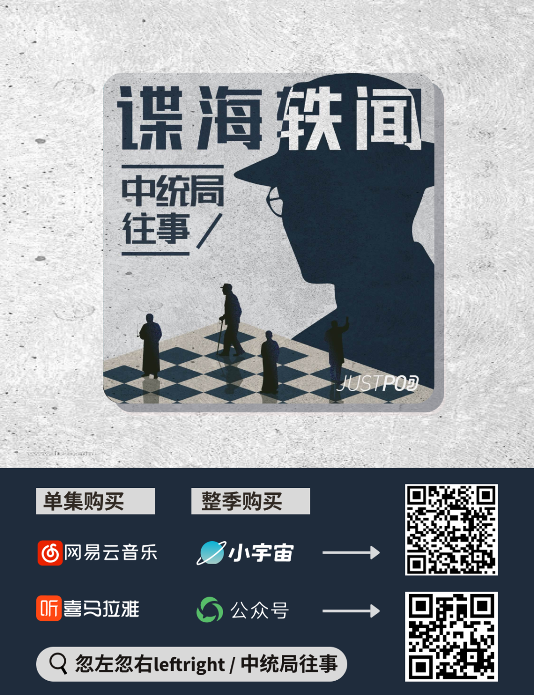

中统局往事05｜叛徒与卧底：从丁默邨、李士群「76号」魔窟到沈之岳的双面间谍疑云


本期介绍
在谍战风云中，核心骨干的叛变往往是胜负的关键。中统的兴衰，既始于对「自首分子」的技术吸收，也受挫于昔日干将倒戈后的一击。从顾顺章叛变后史济美施展的「细胞战术」，李士群、丁默邨落水组建「76号」魔窟，到郭潜、沈之岳等人物扑朔迷离的双面人生，中统如何利用叛徒群体渗透破坏，又如何屡遭背叛？请听郑诗亮带来的精彩分享！
本期试听
本期为全新付费播客系列《谍海轶闻｜中统局往事》第五集，以上音频为试听版本，完整内容欢迎下拉至文章末尾扫描二维码解锁收听。
本期提到
顾顺章 / 李士群 / 郭潜 / 沈之岳 / 史济美 / 丁默邨 / 郑苹如 / 徐恩曾 / 戴笠 / 蒋经国 / 曾永贤 / 邝惠安 / 卢福坦 / 盛忠亮 / 李竹声 / 吴四宝 / 佘爱珍 / 张伯驹 / 潘素 / 季云卿 / 陈宝华 / 木村花子 / 郑英伯 / 郑海澄 / 王汉勋 / 张瑞京 / 缪斌 / 孙耀东 / 周佛海 / 陈公博 / 张国焘 / 蔡孝乾 / 项英 / 胡兰成 / 川岛芳子 / 中村丰一 / 清水董三
《浮世万象》《从左到右六十年：曾永贤先生访谈录》
时间轴
正片开始
史济美「以敌制敌」：通过诱降建立的细胞战术
「红队」接连刺杀两任中统上海站站长
职场失意者李士群：从左翼革命青年到伪政府情报头目
西安事变分水岭：中统的失能与军统戴笠的崛起
汪伪「76号」成立与李士群的金元攻势
大流氓吴四宝与张伯驹绑架案
满门忠烈：郑苹如和她的父兄与未婚夫
刺杀丁默邨的两个故事版本
「76号」首领们的末路：从「借刀杀人」到被老蒋下令处决
中共叛徒郭潜为何能受中统重用？
「魅魔」沈之岳：受戴笠赏识、获蒋氏父子重用
档案消失争议：曾永贤回忆录中对沈之岳身份指控
「一事二主，两俱无伤」：沈之岳是双面间谍吗？ 本期嘉宾 郑诗亮，文史研究者 程衍樑（微博@GrenadierGuard2）
解锁全部内容
由于平台之间不互通，所以您需要根据自己的收听习惯选择平台购买，下方二维码可直达小宇宙app或微信公众号，享受优惠价一次性购齐整季六期，网易云音乐与喜马拉雅目前仅支持单集付费。

👂🏻
文稿、排版：Yo编辑：思钊


中统局往事04｜如何指导文化特务工作：潘公展与张道藩